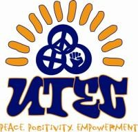

United Teen Equality Center (UTEC)

Website:
http://www.utec-lowell.org/ Location:
Lowell, MA
UTEC’s mission is to be a “by teens, for teens” safe-haven for youth development and grassroots organizing. UTEC provides a safe and multicultural place of belonging emphasizing the holistic development of Lowell’s young people, ages 13-23, particularly those most often overlooked and labeled as “at-risk.” UTEC reaches out to these young people through intensive street outreach, builds upon their unique strengths within a youth development framework, and creates opportunities to best support them in becoming agents of social change and organizers in the community.
Supported Projects
Marketing and Outreach
Aaron Chalek
1/2007 — 1/2008
Aaron has worked on a variety of fundraising, PR, and development projects. His main projects include: setting up a database to better organize our individual donor stewardship and cultivation campaign, working with corporate sponsors to secure technology equipment for UTEC’s new youth center, and instituting a new giving program for local corporations.
Aaron has done a significant amount of work with these projects, securing donations of large scale pieces of equipment for UTEC as well as really streamlining the research, cataloging, and time line of our donor campaigns using online research tools and creating a database. He has also done some PR work designing materials for our corporate giving campaign. Additional projects include writing two grants and securing funding for our sports and recreation program. And updating and refining our donor mailing list which we use to send out newsletters, annual appeals, and other updates. He also worked to coordinate and publicize one fundraising event: an organ concert which drew over 60 people to the center, raised $500 and generated an enormous amount of local publicity for UTEC. We’ve had some challenges in focusing these projects in a way that priorities are clear so that deadlines will be met, as there is such a large number of projects to be covered in terms of the fund raising needs of the youth center. Aaron has done a great job of learning more organizational methods, and is putting them into practice in new ways that are really helping his work.
Aaron’s behind-the-scenes service to UTEC and the Lowell community has impacted young people’s lives and their access to resources, particularly technology in so many ways. Recently, Aaron contacted our donors and worked through their networks to secure donations and discounts of computer hardware. His work secured a deep discount of new model PCs and these will be purchased in the next few months. His hard work has ensured new technology for free teen use in our tech center. These young people typically do not have computers or internet access at home, so the addition of newer, faster computers to the tech center will ensure many more young people get access to the Internet each day for help with research, homework, job seeking and communication.
CTC Technician and Database Development
Jeff Blakely
6/2006 — 6/2007
Jeff has set up an exchange server for the UTEC network. This has helped staff better communicate with one another, and made accountability, reporting, and assigning tasks simpler and quicker, in order to better achieve our mission. Jeff is making progress with his project to update the teen log-in database which will keep track of interactions of senior staff with all UTEC teen members. Jeff has made a presentation and training manual on how to use the teen log-in database, and exchange servers. Jeff has been working consistently with the CSL (on site once per week) to continue to enhance UTEC’s tecnhical capabilities. Some of the projects he is working on in this regard are enhancing UTEC’s fundraising database, organizing the UTEC listserve, and his teen log-in database and exchange server projects. Jeff is still preparing equipment to kick off the next wave of computer repair classes at UTEC, which will begin when UTEC officially opens our new building this spring.
Fundraising
Nathan Biggs
6/2005 — 6/2006
In short, Nathan is helping us build the sustainability to continue all of UTEC’s mission. He has spent much focus on building systems (i.e. donor recognition systems) so that his work will last longer than his immediate 1-year impact. he produced our first ever annual report!! And, he has excited the entire development departament about the possibilities inherent in individual donor fundraising through his infectious excitement about such fundraising.
Nathan has done an excellent job in his role as a VISTA here at UTEC! He took on a leading role in coordinating UTEC’s most comprehensive and successfull fundraiser to date. He has contributed immensely by helping us organize and develop a new online grants database (which I strongly believe will be a model for other nonprofits on how to best integrate technology into their development work). He has written and won grants. He has created a well organized foundation/donor recognition system that has substantially improved our capacity for relationship building with funders. And he has provided much excitement around the development of a new individual donor organization process. I have been very pleased with Nathan’s work (this being his first time in a development position as this) and would rehire him in a minute.
Nathan took a leading role in coordinating all aspects of our first major fundraiser. With our Dvelopment Director out sick for some time during this period, he was sometimes running this without a ton of support. He took this as a challenge and semed to be invigorated by the challenge… never pessimistic or overwhelmed by stress. In the end, we had nearly 200 guests attend and profited nearly $10,000. Moreover, all those who attended coninue today to talk about how professional and well orchestrated it was. Ultimately, Nathan was able to establish the inception of what will now be the annual fundraiser event for UTEC….each year building upon the success of all his work this past year.
Outreach and Multimedia VISTA
Cara Powers
6/2005 — 2/2006
Cara will meet bi-weekly with the Community Software Lab (CSL) to increase UTEC’s overall IT capacity and info structure, conduct outreach to the youth of Lowell to attract students and educate the community, and organize monthly workshops for IT youth staff on computer related activities.
Cara will also strategize and assist in strengthening the teen log-in database, conduct planning meetings with young people and staff to set up computer repair business, research/explore how the youth participating in the program might contribute to the financial sustainability of the program through the work which they produce and provide ongoing supervision for the computer lab and youth staff projects.
Cara created the syllabus for and developed the Open School class for teens who are out of school and working toward their GEDs as well as a video training class for youth.
She also did outreach for UTEC’s summer video programs, and connected with local museums, performing spaces, and local teens who expressed a desire to partipate in Cara’s video class.
Cara also helped plan events such as movie and discussion nights in the community.
Youth Program Development
Diliana de Jesus
8/2003 — 8/2004
Our Americorps VISTA project focused on increasing the capacity and sustainability of UTEC’s Multimedia programs through various development-based responsibilities. Diliana was responsible for grantwriting (specifically focused on enhancing our community technology programs), organizing special events (fundraisers, open houses, etc.), coordinating phone-a-thons, developing PR materials and UTEC’s first-ever annual report. Diliana was expected to work with and train teen leaders in all aspects of their development work.
Specific responsibilities included:
•Attend, participate, and occasionally facilitate all staff meetings and planning retreats.
•Serve as a counselor and role model for youth involved in the Fundraising Team.
•Design and carry out annual development workplan.
•Research and write grant proposals.
•Coordinate special event fundraisers.
•Develop a resource guide for the Development Department.
Diliana’s background in communications has only strengthened her contribution to UTEC by focusing on increasing the capacity and sustainability of our multimedia programs through various development-based responsibilities. She also works with and trains teen leaders of the Fundraising Team in all aspects of their development work. In addition, she assists with the program development in the areas of video production, sound recording, and web design. It is obvious what a tremendous asset Diliana is for our organization, but it is also apparent that Diliana herself has grown professionally from the hands-on development work of our multimedia programs. She plans to continue this type of work well into the future.
Diliana has played a major role in being an active participant in the organization’s overall development. She has consistently supported her co-workers, emphasizing the team environment at UTEC. Diliana has the skills to bring an idea to life. For instance, UTEC’s first major fundraiser will be taking place early next month. Diliana worked with teens in the Fundraising Team to gather ideas/themes for the event. Since then, she has developed and followed a timeline to make the event a future success!
Diliana has accomplished the following major tasks as based upon her workplan:
• Completion of first-ever UTEC newsletter (second issue now in progress)
• Just recently completed first-ever Annual Report.
• Completed three monthly Open House Nights (and built a system for carrying out this work).
• Developed new mailing list for all fundraising activities.
• Secured donations from various businesses as part of program ads for newsletter.
• Completed and submitted various grant applications (as well as grantwriting training course).
• Developed new bios for all staff.
• Currently documenting all work as part of a new Fundraising Resource Guide.
• Currently planning a special event fundraiser to support a new capital campaign.
• Interviewed and hired teen fundraising staff.
Program Building
Dirk Knoelder
4/2002 — 4/2003
Dirk has begun to enhance the infrastructure of our Tech Goes Home Program by contacting Codman Square Health Center and looking into possible donations for new computers. He has also be working on developing a family involvement component into the curriculum.
He has started teaching a new digital photography and young men’s creative writing program, both offered weekly at the center. He will be creating resource manuals for both of these classes which will prove to be very helpful in institutionalizing these programs.
And finally, he is now taking on the responsibility of planning our new music recording program. He will be working with a sound recording student from UMASS-Lowell in order to coordinate this project.
Due to budget cuts, Dirk has also taken on most of the responsibilities in terms of coordinating our video project. He has undergone training from our Multimeida Coordinator and will now be working with a group of teens so that they can eventually facilitate most of the project’s work.
Approximately two weeks ago, the United Nations celebrated its annual International Day of Peace. As UTEC was invited to participate in this event (celebrated in Boston), we decided to put together a videotape of how young people define peace in their own local communities. Dirk was able to work with many young people to get this video accomplished and shown in front of all those in attendance at this event. There is some amazing footage on this tape, particularly of older gang members (ages 22-25) who speak about their own experiences of violence and how they are now working with UTEC’s Peace Team on mediation work with current gang members in Lowell. Dirk did an excellent job of putting this work together so that it would best reflect the voices of these young people.
Community Engagement
Chanvon Mom
4/2002 — 7/2002
Chanvon has been involved in three major projects: Technology Goes Home, Youth Mapping, and street outreach recruitment particularly targeting young women.
Regardingthe Technology Goes Home Program, Chanvon has been able to coordinate with our PC repair program to ensure that the 4 families enrolled all received refurbished computers. All 4 families completed the program. All families attended all sessions of the program, completing the curriculum designed by Tech Goes Home Boston.
With regard to the youth mapping, our team of nine youth mappers have canvassed most of the downtown area. The youth attended a full-day training June 27th, where they learned about the importance of mapping, interviewing skills and the surveys & database that are fundamental to the process.
And lastly, in terms of Chanvon’s involvement in the street outreach recruitment, she spent 2-3 times during the week doing outreach with the other recruiters to get young women involved in our programs, specifically technology-related programs.
Chanvon was able to do a very nice job of recruiting more young women into the program, particularly those of Southeast Asian descent. With regard to the Tech Goes Home program, one of the major changes we will be making for the next round will be to incorporate a greater family involvement component into the overall structure.
Media Liaison
Guillermo Madrigal
7/2008 —
The Media liaison will manage digital video library, train staff members on video and editing equipment/software, work with teh video instructor to manage the video program. The VISTA will also be working the LTC to film and edit community events that involve young people.
- Create, organize and manage the UTEC video library
- Record, edit and package future UTEC live events for addition to the video library
- Serve as primary contact for multimedia inquiries between UTEC, LTC, and other non-profits
- Assist UTEC graphic design team, as needed
- Attend video training courses as appropriate
- Started UTEC’s digital video library, archiving media from youth video projects
- Coordinated with LTC, the local cable access TV station, to develop youth media projects
- In the process of developing a curriculum and staff training program to continue offering youth media programs
Related Content
None created yet!